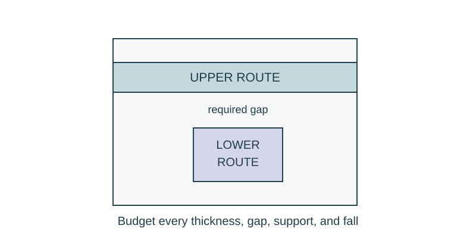

Job 21 · Revise an elevation budget
A revised route package after a finish or run-length change.
110 minutes • Tape measure + pocket notebook • Name: __________________ Date: __________
Materials: Prior service-bay drawings, paper strips, notebook, calculator.

Brief · 12 min
- A floor finish gets thicker. Which reference changes, and which dimensions must be recalculated?
- Set up a dated notebook spread: sketch and readings on the left; calculation, decision, test, and revision on the right. Mark small sketches NTS unless drawn to a chosen scale.
- Work in pairs and rotate roles. Each student keeps an individual notebook and performs a tool action and a calculation.
Measure · 18 min
- Use a supplied model depth of 8 in above a fixed lower obstruction.
- Original finish occupies 1 in; route envelope 2 in; supports 1/2 in; route fall 2 in; required classroom gap 1 in.
- Create a stacked section showing all five allowances before changing anything.
Plan · 20 min
- Compute original and revised budgets independently.
- Mark the finish reference and any fixed obstruction explicitly.
- Propose a revised route only if a constraint is violated; a remaining positive budget alone does not verify every local crossing.
Worked example
Find spare depth, then increase finish thickness by 3/4 in. Spare = total depth − all occupied allowances. Original spare 8−(1+2+1/2+2+1)=1 1/2 in. New spare 3/4 in.
Make · 28 min
- Build both paper sections with colored allowance bands.
- Exchange the change order and ask another pair to reproduce the revised section.
- Check one local crossing and record whether it uses the same maximum envelope assumed in the budget.
Test · 20 min
- Every allowance appears once and uses the same direction/reference.
- Original and revised totals can be checked.
- Recommendation acknowledges bend, support, and crossing details beyond endpoint arithmetic.
Explain · 12 min
- Complete the individual exit below before discussing answers.
- Add the test result, revision, and notebook page reference to your response. Use the notebook as evidence rather than retyping every page.
- Save the three selected responses and submit the lesson for teacher review. Show your physical work and notebook to the teacher. Clean up and return shared supplies.
Individual exit
A route runs 12 ft at 1/4 in/ft. The run increases to 16 ft at the same slope. How much extra fall is needed, and what happens to a depth budget with only 3/4 in spare?